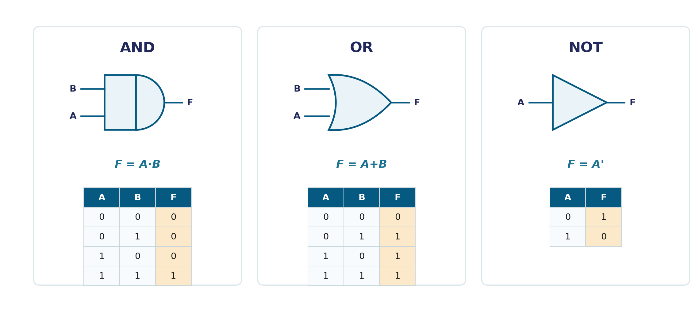

Everything so far has treated bits as numbers — quantities to add, convert, and store. Binary logic asks a different question: what if a bit is treated as a statement that's either true or false? That shift in viewpoint is what makes computation possible at all — and it's the foundation the rest of this course (and the full formal Boolean Algebra you'll meet next) is built on.
A binary variable is simply a named quantity that can take exactly one of two values: 0 or 1. So far you've read 0 and 1 as numbers. In binary logic, it's more useful to read them as truth values — 1 for "true," 0 for "false." A binary variable might represent "is the door open?" or "is this bit set?" — the same two symbols, a different meaning.
Binary logic defines three fundamental operations on binary variables, each with its own truth table:

A logic gate is the physical circuit that carries out one of these operations electronically — a small circuit that takes one or two binary inputs and produces the corresponding binary output, essentially instantly. The three operations above map directly onto the three simplest gates: the AND gate, the OR gate, and the NOT gate (also called an inverter). Building real circuits, combining gates, and the standard gate symbols are covered in full on the Digital Logic Gates page — the goal here is just to connect the abstract truth table to a physical device you'll be drawing constantly from here on.
if A and B:, if A or B:) is the exact same binary logic, written in a programming language instead of a truth table.cats AND dogs NOT fish is binary logic applied to text matching.| Operation | Symbol | Result is 1 when... |
|---|---|---|
| AND | A·B or AB | Both A and B are 1 |
| OR | A+B | At least one of A, B is 1 |
| NOT | A′ or Ā | (Complements the input — 0 becomes 1) |
Binary logic gives us the what — three operations and their truth tables. The next step is the why and the rules: the formal mathematical system called Boolean Algebra, which lets you prove two different-looking expressions are actually equivalent, and simplify circuits with confidence instead of guesswork.